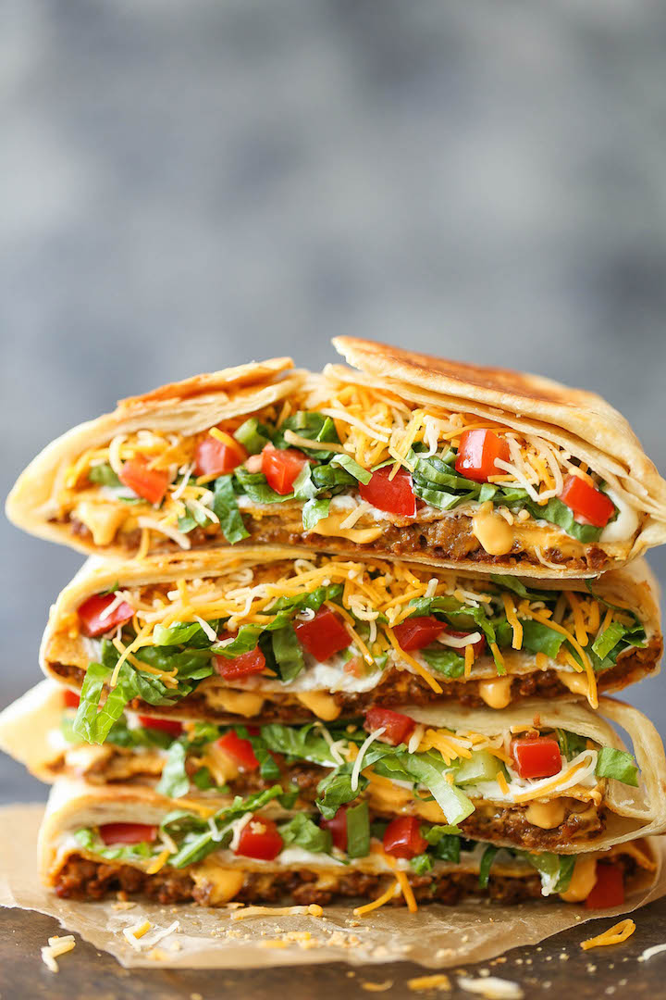

Homemade Crunchwrap Supreme

Description
This healthy alternative to Taco Bell's fan favorite the
Crunchwrap Supreme will be a staple in your recipe book!
The best part about this recipe is that it only takes 40 minutes to cook
from start to finish! (Excluding cleanup of course)
Ingredients
- 5 large flour tortillas
- 1 pound lean ground beef
- 1/3 cup water
- 3 tablespoons taco seasoning
- 2/3 cup nacho cheese sauce
- 4 tostadas (or 2 cups tortilla chips)
- 2/3 cup sour cream
- 1 cup iceberg lettuce (shredded)
- 1 cup tomatoes (diced)
- 2 cups Mexican cheese blend (shredded)
Steps
- Brown ground beef in a large pan. Drain fat. Add 1/3 cup water
and taco seasoning. Simmer 5 minutes or until thickened.
- Meanwhile, cut one of the flour tortillas into quarters.
Cut the corners to be rounded.
- Heat the remaining flour tortillas in the microwave for 20 seconds
(this keeps them from cracking).
- Add 1/4 cup ground beef to the center of each tortilla. Top with
cheese sauce. Add tostada shell, sour cream, lettuce, tomato, and
cheese blend.
- Place the 1/4 piece of the tortilla in the center and gently fold the
tortilla to seal.
- Preheat 1 tablespoon vegetable oil over medium heat in a large skillet
(or to cook all of the crunchwraps at once, preheat a large griddle)
- Place tortillas, seam side down, in the skillet and cook until
golden, about 3-4 minutes. Flip and cook the other side.
- Serve Immediately.